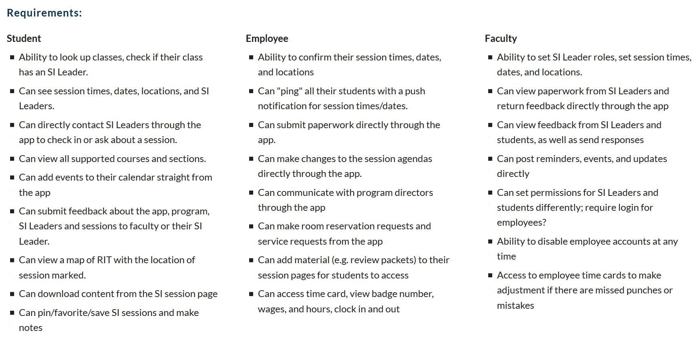
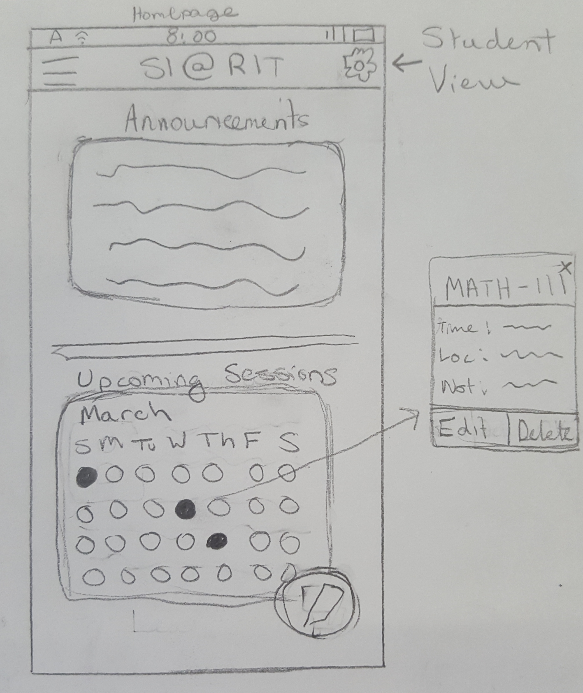
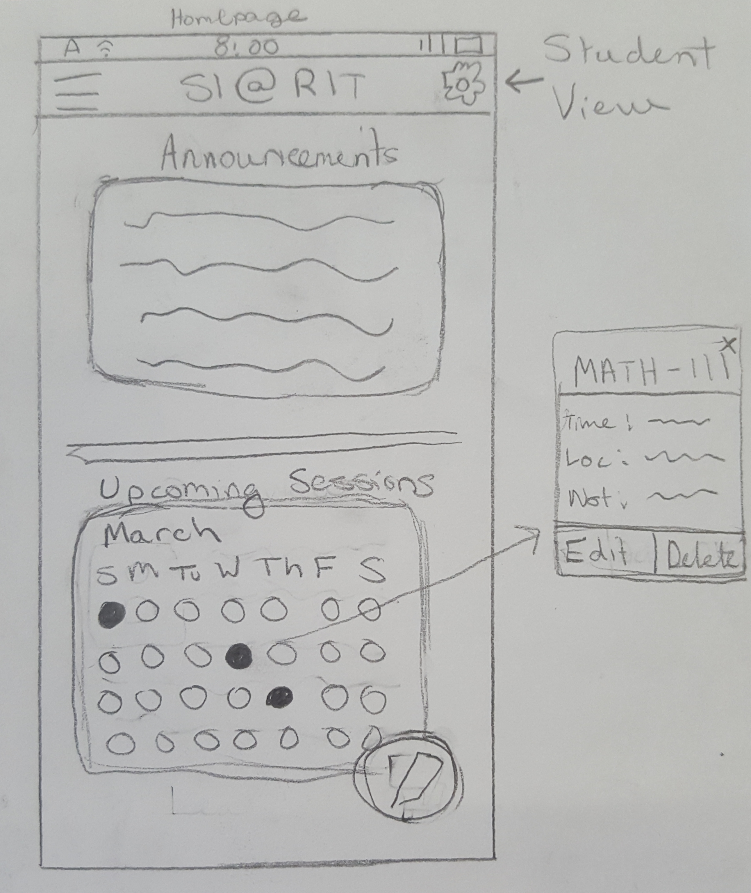
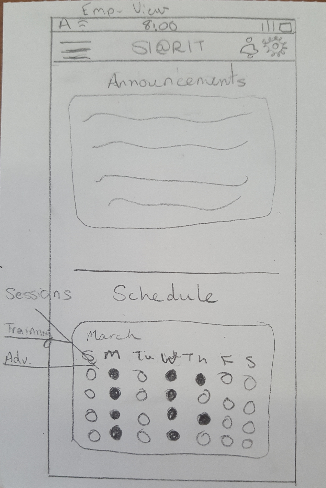
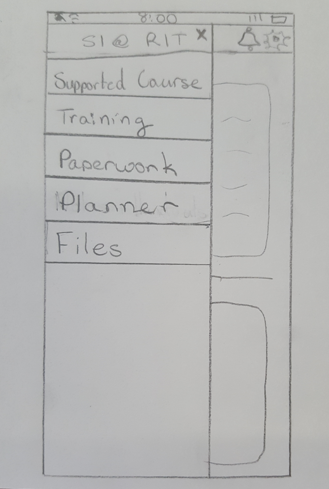
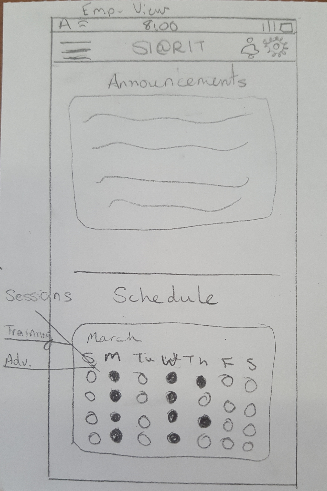
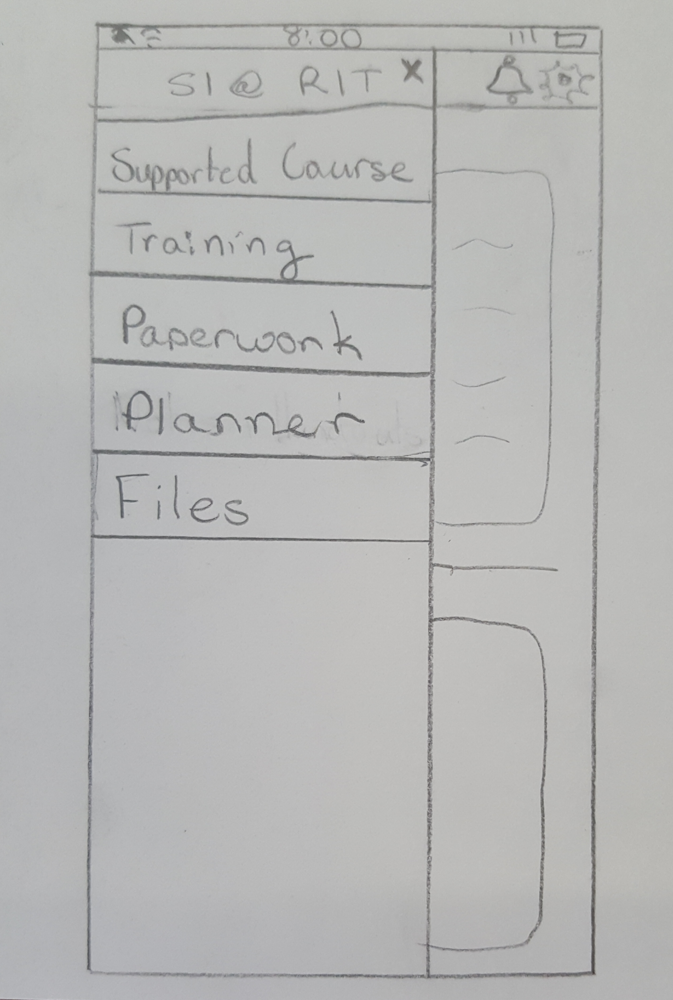
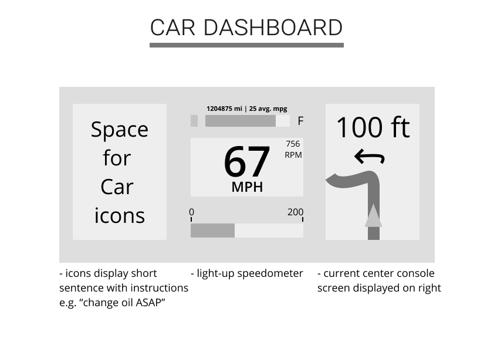
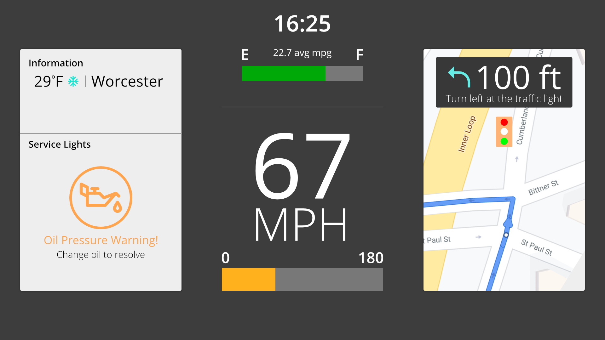

Supplemental Instruction at RIT
View the complete project site here.
The Supplemental Instruction (SI) program is designed to support students enrolled in historically difficult courses at RIT. Through structured weekly sessions in an academic setting, students and their SI Leaders work together to learn and succeed in and out of the classroom.
Problem Statement
Students enrolled in courses supported by SI often found themselves with little way to contact their SI Leader outside the classroom aside from email, and also were left unable to check next meeting topics or times without scouring the RIT Academic Support Center site. How could the communication between SI Leaders and their students be improved?
Solving the Problem
Before starting on sketches of a potential prototype solution, I first set out to work out the different users of a SI application, and what their requirements and use cases might be. Following is a comparison of different types of users of this application and their needs.
Sketches
Next I began sketching different layouts for several screen states and the interfaces for student and employee applications. My intent was to create one app with differing interaction components based on which type of user was currently accessing the application.
Student View
 


Employee View
 



Outcomes
After sketching out several screen states for each of the interfaces, I set out to create a testable prototype for both employees of the SI @ RIT program and the students engaged with the program. Both prototypes were created as the same application, following a similar look & feel so that users could switch between the two interfaces without confusion. These prototypes were created entirely in Figma, and animated with InVision to allow for usability testing of the different interfaces. The interactive prototypes are shown below.
employee interface
student interface
Considerations
In testing the student interface, most of the significant findings related to the visibility of the system and some issues relating to consistency and standards in regards to design choices. The first user completed the usability testing without encountering issues or errors, but did run into some roadblocks, mostly focused on navigation and menu hierarchy. They noted that there was some inconsistency with the button navigation for logging in: while one button said "login", the other said "continue as student". The user felt confused at the discrepancy, and tried to login with the first button before realizing what the second button was intended to do. This user also noted the menu hierarchy felt disorganized and could be better arranged to reflect the importance of each page in the app. The modal button interface gave this user some trouble, as some modals included simply text buttons within the modal, while others included modals with separated buttons. This reflected another inconsistency in the app, but did not interfere with the user's ability to complete tasks.
The second user that tested the student interface had more comments about the color scheme of certain components. They noted that the green chosen for certain modal buttons was too light to read against a white card layout, and that made it difficult to read the button text and complete some tasks. Otherwise, their comments were similar to the first user in regards to navigating across the interface. Both users successfully answered the question of "What purpose does the point system serve?", with slightly different answers. However, it was confirmed that the point system can be intuitively found to be a measure of incentive for students to attend more SI sessions and be able to obtain rewards in exchange, based on the points collected and use of the interface.
The test for the employee interface let to similar findings at the student interface, with a few more notes pinpointing functionality specific to the different interface. The user first tried to populate form fields, but was able to successfully proceed to the homepage of the employee interface after some testing of where to click. The user successfully navigated the employee interface, with some setbacks in navigating to certain pages given the split navigation (2 navigation menus). The only difficulty the user encountered was navigating to the settings page, which was included in the 'more' list navigation. The user had comments about the color scheme of the employee interface, noting readability was difficult on certain cards with the same green shade used in the student interface.
Overall, users were successfully able to complete tasks with limited issues. However, the issues encountered confirmed that the navigation of the application is inconsistent across both interfaces, and lead to challenges in finding the right page or modal to be using. Given these findings, my next iteration of the SI at RIT app will include several revisions.
Car Dashboard UI
In most modern cars, you’ll find the analog dashboard of times past has been replaced with digital touchscreens as the era of smartphones engulfs the world. However, in most states in the US, using your phone while driving is illegal, and for good reason. Does the inclusion of touchscreens in cars impede one’s ability to pay attention to the road while driving? Between analog and digital, which is the best to ensure a pleasant user experience while interacting with the car while also ensuring the safety of the driver and passengers?
The Process
Given a set of user data from a survey conducted by the UX Club, I began my solutions with sketches of potential interface layouts and the design considerations behind them. Sketches involved the consideration of more popular choices from the survey populus as well as anecdotal experience from different types of car interfaces.
After refining some of my sketches, I developed the first prototypes of what the center console and dashboard interfaces could look like, and what interactions they might afford the user.

Here, the center console offers physical buttons to accompany a more modern touchscreen interface, to provide the user with a variety of options for controlling different features. The center console is accompanied by physical control buttons placed conveniently on the steering wheel to allow users to switch between screen displays and controls quickly and efficiently, without needing to take their eyes off the road. Changing a control setting would emit an audible noise to notify the user of successful state change, as well as haptic feedback on the steering wheel (with customization settings) for deaf and other impaired users.

Meanwhile, my initial idea for the car dashboard itself was to make information as simple as possible, such that a user would need only to glance momentarily at the dash and not be distracted from driving. The service lights commonly displayed on car dashboards would display only as needed on the left-hand side of the dashboard, with large, short text to inform the user of potential actions to take. The middle of the dash would contain RPM and speedometer information, as well as the fuel gauge and car mileage information. The right-hand side of the dash would then be more modular, adapting its display to the current display of the center console, making control and modification of the center console more easy to do without the driver having to take their eyes off the road or hands off the wheel.
The Solution
My higher fidelity solution for the center console ended up quite similar to the first drafts, with a few tweaks to accommodate usability. The display uses high-contrast colors to help users indicate where they currently are and the content of the display. Again, use of text is kept minimal to not distract the user. Concurrent events are displayed on the right-hand side of the screen, to not interfere with the current display but allow users to see music playing while GPS navigation is on, and would have similar functionality for climate control and phone pairing as well. Settings for the center console would allow the user to change colors of the display, brightness, icons, sounds, and text size, to accommodate modularity and more personalization.

As for the car dashboard, most of the first draft designs found their way into the final mockup with smaller alterations. The left-hand information panel now shows two sections, one for general information with space for car status (e.g. cruise control, directional lights on, auto windshield wipers, etc). The service lights only display lights that are currently on, alongside their resolution for the user to take action. The speedometer and fuel gauge offer different color gauges to indicate current status; for instance, the fuel gauge will turn red when the fuel is low. The right-hand side mirrors the current center console display, complete with any critical information to assist the user - in this case, navigation directions.
Considerations
My solution for the car dashboard aligned with helping to keep drivers as focused on the road on possible, and limit potential distractions made by these interfaces. The interface solutions are intended to be easy to see and glance at while in the car, with physical buttons and haptic feedback incorporated to allow users to get feedback on their inputs made without having to constantly look at the screen. Incorporating user data, my goal was to ensure driver and passenger safety above all, with minimal design to allow only the most critical information to be relevant at most times. These features are intended to be customizable to accommodate a wider range of users who may feel more comfortable on the road and feel lesser need for distraction prevention. User testing of these designs are a future consideration to improve and refine the concepts displayed and ensure the interface is able to accomplish these goals and more.
Finance Tracking - Problem Statement
Finance tracking has become a popular avenue for many banking and stock market applications to take as people around the world look to their mobile devices to find their bank statements, portfolio growth, and other areas of financial interest. These users are interested in their own financial fitness and need a reliable way to track their spending habits. While several apps on the market exist for this purpose, none combine the features of spending tracking, financial planning. and investments. Many people are looking for a way to track their spending habits and make better budgeting decisions based on their own personal goals, income, and revenue. How can this experience be improved for users of various economic background and knowledge?
The Process - What Is Teller?
Teller began as a team project, of which I lead the mobile interface design and theming of the application. Our small team began with an interest in our potential stakeholders. We first conducted several contextual inquiries to get a better sense of our target audience and gauge their needs in a finance tracking application. With the data we were able to gather, we then built an affinity diagram from the ground up, taking note upon note of key data points to be considered. The completed affinity seen below resulted in our team choosing six key focal points for our application to follow.

Sketches
The Solution
outcomes
design sprints
site redesign with jquery

A re-design of the RIT IST department website, including the use of jQuery plugins to improve site interactivity.
facebook minimalism


Designing a more minimalist interface for the mobile Facebook application.
RIT News Site
Design overhaul of the RIT News Site.
Projects
The SI @ RIT App

A fully-fleshed prototyping project, showing the process from ideation to usability testing of lo-fi and hi-fi prototypes.
Car Dashboard UI
Design sprint of a reimagined car dashboard interface, with survey data utilized for design decisions.
Teller

App prototype involving contextual inquiry and development of personas in the process.
Design Sprints

A smaller collection of sketches, designs, and ideation.
About
 I'm a 5th-year Human-Centered Computing student at Rochester Institute of Technology, graduating in May 2020 and currently searching for full-time opportunities.
I'm a 5th-year Human-Centered Computing student at Rochester Institute of Technology, graduating in May 2020 and currently searching for full-time opportunities.
My drive for UX was borne from a young age, as growing up I observed relatives and friends struggle to use technology or experience frustrating roadblocks. My goal has always been to make technology friendly and easy to use for everyone, taking every user into consideration.
Outside of UX design and development, I love to experience as many forms of art as I can. I create my own calligraphy and always find myself engrossed in books or in games with rich stories. I believe that sharing in artistic expressions of the human experience is vital to understanding and empathizing with users of every demographic, and creating a truly personalized user experience.
To get in touch, you can find me on LinkedIn or contact me by email.
- Sierra